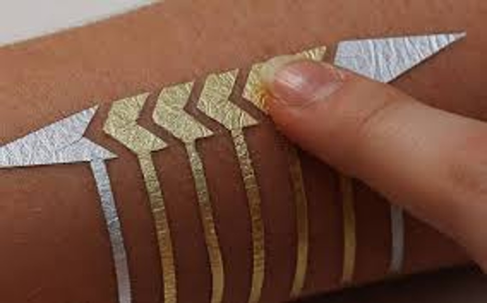

Wearables
Wearables maken technologie draagbaar. Als concept zijn ze daarom het tegenovergestelde van Virtual Reality.
Wearables forceren mensen om echt in de wereld te leven, in plaats van afgezonderd in een simulatie.
Er zijn al een aantal voorbeelden van moderne wearables. Denk bijvoorbeeld aan de smart-watch of de smart-tattoo.
Ze doen momenteel nog niet hele bijzondere dingen, bijvoorbeeld het meten van het aantal stappen die je zet op een dag.
Toch is het een concept waar nog veel in gegroeid kan worden. Technologie wordt namelijk steeds beter, waardoor we allerlei devices steeds kleiner kunnen maken.
Tijdens mijn dagelijkse reis van en naar school zie je bijvoorbeeld veel mensen die naar muziek luisteren.
Terwijl je vroeger nog hele grote koptelefoons nodig had, kun je tegenwoordig al best aardige geluid uit piepkleine oortjes laten komen.
De laatste jaren heb ik persoonlijk ook de opkomst gezien van de draadloze oortjes. Er is dus wel degelijk beweging en vooruitgang op het gebied van wearables.
Genoeg achtergrondinformatie over wearables. Nu gaan we eindelijk beginnen met de assignment.
De assignment die bij wearables hoort is het bedenken van een concept wat nog niet is benoemd tijdens de lecture.
Het hoeft niet zozeer uitgevoerd te worden, maar het is vooral bedoeld om je aan het denken te zetten over wat voor mogelijkheden er allemaal zijn op het gebied van wearables.
Assignment
De natuurlijke volgende stap in de ontwikkeling van wearables is om het niet meer te dragen op je lichaam, maar juist in je lichaam. Denk bijvoorbeeld aan pacemakers of smart tattoos.
Vooral die smart tattoos lijken mij erg interessant. Die zet ik dan ook in als focus voor deze assignment.
Zo zou je door smart tattoos te gebruiken bijvoorbeeld mensen kunnen stimuleren om meer sociale interactie met elkaar te hebben.
Door een smart tattoo in je hand te gebruiken kun je bijvoorbeeld bijhouden wat voor soort handgebaren je maakt.
Door de smart tattoo in de individuele vingers te plaatsen kun je een hoop precisie meten.
Met sensoren in de vingers die snelheid en locatie meten kun je bijvoorbeeld verschil maken tussen iemand een hand geven en iemand een high five geven.
Het zou dan leuk zijn als je later een overzicht krijgt van wat je allemaal deed met je handen.
Misschien ben je tijdens het reizen van en naar werk wel erg agressief en zie je dat terug in een hoog aantal opgestoken middelvingers op een bepaalde plek en op een bepaald tijdstip.
Dat soort data zou de overheid dan kunnen gebruiken om veranderingen door te voeren in de ruimtelijke ordening.
Misschien is er ergens wel een gevaarlijk kruispunt of zorgt het feit dat je ineens van 3 naar 2 banen moet voor veel frustratie.
Het zou kunnen gebeuren dat je de laatste tijd wel erg veel aan het typen bent op het werk.
Daar zou je dan bijvoorbeeld een melding van kunnen krijgen op een van je devices als de smart tattoo dat detecteert.
Als je je device koppelt kun je dan ook bijhouden wat je allemaal opschrijft en in welk programma je dat doet.
Als je aan het chatten bent zou het ook kunnen bijhouden met wie je aan het chatten bent.
Je creëert op deze manier een soort digitaal dagboek van je handen. Dat zou je dan weer kunnen delen en vergelijken met anderen.
Misschien is je techniek tijdens het sporten niet helemaal optimaal, dan krijg je door een bericht op je device daar een melding over.
Vervolgens kun je hier meer over leren zodat je bijvoorbeeld blessures kunt voorkomen of beter kunt presteren.
Met deze kennis kun je dan ook weer anderen helpen die misschien hetzelfde probleem hebben.
De bovenstaande voorbeelden zijn allemaal gericht op het feit dat je eigen smart tattoo alleen met andere devices communiceert die ook van jou zijn.
Je zou het sociale element hierachter natuurlijk veel groter kunnen maken als je ook interactie kunt hebben met andermans smart tattoo.
Door allerlei data uit te wisselen kunnen andere mensen inspelen op de data van jouw smart tattoo.
Houdt iemand anders bijvoorbeeld de deur voor je open? Dan wordt dat gemeten door de smart tattoo.
Als allebei de partijen verbonden zijn met internet dan kun je bijvoorbeeld achterhalen wie dat was en kun je een bedankje sturen.
Wordt je afgesneden in het verkeer? Je steekt in het echt je middelvinger omhoog. Daarnaast ontvangt de persoon ook een middelvinger emoji in zijn meest actieve chat programma.
Mag je tijdens het ritsen er gewoon tussen? Stuur dan een duimpje omhoog door simpelweg de beweging in het echt te maken.
Research
In mijn verdere onderzoek naar smart tattoos zie ik dat de ontwikkeling voornamelijk gericht is op het inzetten van deze smart tattoos voor medische doeleinden.
Omdat de tattoos voornamelijk bestaan uit allerlei sensoren die je overal op het lichaam kunt plaatsen kun je een hoop data vergaren.
Zoals je nu al met je smart-watch je hartslag kunt laten meten, gaan smart tattoos daar nog een stap voorbij.
Zo zijn er al smart tattoos die meten wanneer je teveel
schadelijke UV straling binnen krijgt, worden er glucose niveaus bijgehouden en wordt er gekeken naar je lichaamstemperatuur.
Voor de mensen die medische doeleinden wat minder spannend vinden is er gelukkig ook wat wils.
Zo werkt Microsoft aan een smart tattoo die je kunt gebruiken als touch screen. Zo kun je met je lichaam bijvoorbeeld een van je devices besturen.
Op de onderstaande afbeelding zien we de smart tattoo van Microsoft.

Tijdens mijn onderzoek naar smart tattoos heb ik een hoop geleerd over allerlei functionaliteiten die ze met zich mee kunnen brengen.
Wat ik eigenlijk was vergeten is het feit dat het wel gewoon tattoos blijven.
Het zijn vormen van kunst die je permanent op je lichaam plaatst. Nu krijgt het echter extra functionaliteit.
In dit artikel staan een aantal afbeeldingen met voorbeelden van smart tattoos.
Deze worden ook weer voor medische doeleinden gebruikt. Maar wat mij verbaasde was het feit dat het op creatief niveau eigenlijk geen extra beperkingen met zich mee brengt.
Als jij je smart tattoo in de vorm van een ster wilt, dan kan dat. Als jij je smart tattoo klein wilt, dan kan dat. Kortom: Het voegt iets toe aan de tattoo. Er zijn geen extra
beperkingen of randvoorwaardes, waardoor het ook voor mensen die nu van tattoos houden geschikt kan zijn. Het gelinkte artikel is namelijk van inkedmag.com, een site voor mensen die
gewoon heel erg van tattoos houden. Het feit dat ze een artikel over smart tattoos op hun website plaatsen geeft al aan dat het idee van de tattoo door de smart tattoo niet op negatieve
wijze wordt aangetast. Bestaande tattoo fans zien dit niet als potentiele bedrijging, maar kunnen het juist zien als manier om meer tattoo fans te genereren voor hun gemeenschap.
Op sociale wijze meedoen aan een gemeenschap met een gedeelde interesse: Misschien is dat nog wel de echte kracht van de smart tattoo.
En voor de mensen die niet van naalden houden is er ook goed nieuws: De universiteit van Twente werkt namelijk aan een manier waarmee ze smart tattoos kunnen plaatsen zonder
naalden te gebruiken.
Reflect
Persoonlijk heb ik niet zo veel met wearables. Dat is na dit onderzoek ook niet erg veranderd. Het feit dat er gewerkt wordt aan nieuwe sensoren die zo klein zijn dat je ze in de huid
kunt plaatsen is een positieve ontwikkeling. Vooral in de zorg kunnen er dankzij dit soort technologie veel mensen worden geholpen. Ik denk dat dat dan ook het meest waardevolle
onderdeel is van dit onderwerp.
Toch is het niet iets voor mij. Ik zie zelf ook maar
weinig mensen die momenteel met een smart-watch rondlopen. De mainstream wearables van nu hebben wat mij betreft nog geen functionaliteit die daadwerkelijk anders is. Ik kan met mijn
smartphone, laptop en desktop immers ook veel.